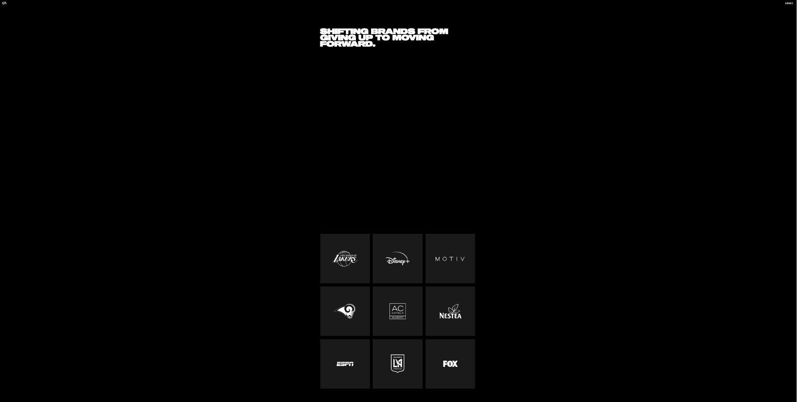

This site is nice because of how smooth it looks and how the colors blend well together. You are told right off the bat what the site is about and all the necessary navigation links are on display. The portfolio tab has all of her work that she's done and even has a link if you want to commission her. There's a lot on this site, so the only thing that could be added would be a button that would go back to the top.
This website would be the ideal site for me. It has colors that are not overly bright, and flows very smoothly. There's a section called Squarespace Projects where I think this portfolio shines. It shows sites that this person have made for other people, and there are a lot of them, all of them very professionally made. You always know where you are on the site, with navigation links on the top and bottom of each page.
This site is very clean and straightforward. There is a tab called map which is a bit confusing, but other than that, the site is great. I really enjoyed going through it and especially enjoyed reading through the "Thought Sketches section". It really gave good insight on what she has done and some tips for interviews. There is also a photography section that is just simply stunning.
Callie Schweitzer is a CEO of The Callie Co., which is an executive advisory firm. Her website also looks very professional. The front page tells about her and her company. There's a tab called Journalistic Roots, which goes into more of her background. Her social media links are on every page in a very clean way, so you don't have them shoved into your face. Overall a very clean and sleek look.
This site is absolutely amazing. I zoomed out so the screenshot would have a better view of the page. When you hover over the clients, it shows a picture of them in the square and the background colors of the page changes to that of the respective brands main color. Each page has contact info on the bottom, and if you hover your mouse near the bottom you can click anywhere and it will take you back to the top. This site blew my mind. The portfolio section is also very well made, with tons of clients under this persons belt. Very smooth transitions and a clean look all around, this site is a must visit.